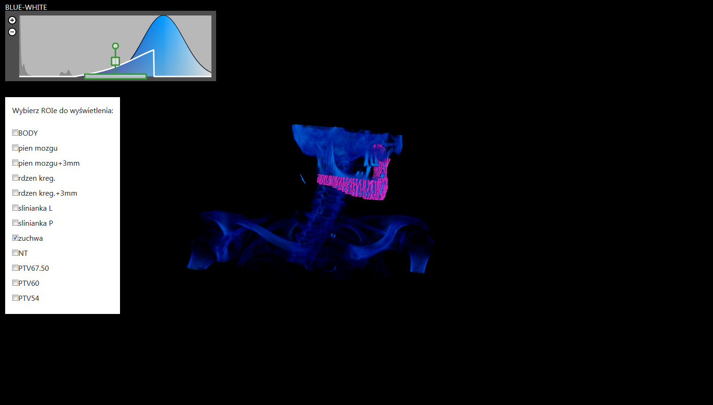

Start
Niniejsza strona jest dokumentacją projektu dyplomowego Moduł trójwymiarowej
wizualizacji danych pacjenta w systemie planowania RT wykonywanego przez Macieja
Zalewskiego pod opieką dr inż. Roberta Szmurły na wydziale Elektrycznym Politechniki
Warszawskiej. Źródło samej dokumentacji można znaleźć pod tym adresem.
Opis projektu
Wstępnym celem projektu było utworzenie modułu opierającego się na bibliotece vtk.js, który miałby realizować wizualizację 3D
pacjenta w projekcie zespołowym. Oprócz wizualizacji podstawowych danych wolumetrycznym moduł
miał dawać możliwość pokazywania Roi'ów (Region of interest).

Dane wejściowe
Do działania projekt wymaga 3 danych:
- Pliku o rozszerzeniu .vti zawierającego dane wolumetryczne pacjenta
- Listy roi'ów, które będą wyświetlane
- Zbiorów współrzędnych wokseli należących do danego Roi'a
Plik oraz lista roi'ów są pobierane z w cześniej zdefiniowanych adresów podczas uruchamiania
modułu. Zbiór współrzędnych roi'a jest pobierany w momencie zaznaczenia checkboxa
odpowiadającego za wyświetlenie danego roi'a. Lista oraz zbiory są w formacie json.
Przykładowa lista roi'ów:
{"rois": ["ROI1", "ROI2", "ROI3"]}
Przykładowa zbiór wokseli:
{"name": "RO1", "points": [[0, 1, 2], [0, 1, 3], [0, 2, 3]]}
Każda z 3-elementowych tablic w points przedstawia kolejno współrzędne x,y,z danego
woksela. Nie musimy tutaj wysyłać rozmiaru danego woksela, ponieważ ich rozmiar można
pobrać z pliku vti.
Moduł główny
Moduł głowny jest komponentem klasowym React'a. Nie jest on jednak montowany do wirtualnego
DOM'u React'a tylko do DOM'u przeglądarki. W dalszym etapie projektu zajmę się rozwiązaniem tego
problemu. Tymczasowo komponent ten nie dostaje żadnych props'ów, przez co wartości, które
powinny być przez nie przekazywane (takie jak url'e do danych), są wpisane na stałe (hardcoded).
Te niedopatrzenie również będzie naprawiane w przyszłości.
Adders
Moduł ten składa się z następujących funkcji w kolejności alfabetycznej:
-
addRoiToScene(url, name, id, { spacing, roiActors, renderer, renderWindow })
Funkcja pobiera dane roi'a z adresu url, tworzy jego
obiekt 3D, zapisuje go w słowniku roiActors, dodaje go do
renderera i odświaża ekran przeglądarki.
-
addVolumeToScene(actor, { renderer, renderWindow })
Funkcja dodaje obiekt actor, zawierającego dane
wolumetryczne pacjenta do renderera i odświaża ekran
przeglądarki.
Creators
Moduł ten składa się z następujących funkcji w kolejności alfabetycznej:
-
createInfoLabel()
Funkcja tworzy i zwraca etykietę, która jest używana do wyświetlania informacji dla
użytkownika, np. "Trwa pobieranie pliku pacjenta".
-
createLabelContainer(changePreset)
Funkcja tworzy i zwraca etykietę, która służy do prezentacji aktualnego schematu
kolorów, w którym są wyświetlane dane wolumetryczne. W momencie kliknięcia w nią
zostaje uruchomiona funckją changePreset, która służy do
zmiany aktualnego schematu.
-
createPiecewiseGaussianWidget()
Funkcja tworzy i zwraca widget, który jest instancją
klasy vtkPiecewiseGaussianWidget.
-
createRoiActor(points, spacing, id)
Funkcja tworzy i zwraca instancję klasy vtkActor, która
zawiera obiekt 3D będący zbiorem wokseli o współrzędnych points (tablica
tablic 3-elementowych) i rozmiarze spacing (tablica
3-elementowa). Na podstawie liczby id nadaje aktorowi
kolor
z tablicy kolorów zdefiniowanych w aplikacji.
-
createRoiMapper(points, spacing)
Funkcja tworzy obiekt 3D będący zbiorem wokseli o współrzędnych points (tablica
tablic 3-elementowych) i rozmiarze spacing (tablica
3-elementowa). Następnie tworzy i zwraca instację klasy vtkMapper zamierającą wcześniej stworzony model 3D.
-
createSelectRoi(handleCheckbox)
Funkcja tworzy panel zawierający checkboxy sterujące wyświetlaniem roi'ów na
ekranie. Tworzy go na podstawie listy roi'ów opisanej w
Danych
wejściowych. Każdemu z checkboxów przypisuje funkcję
handleCheckbox, która steruje wyświetlaniem danego roi'a.
-
createWidgetCointainer()
Funkcja tworzy i zwraca div'a będącego miejscem zagnieżdzenia widgeta tworzonego w
createPiecewiseGaussianWidget().
Removers
Moduł ten składa się z następujących funkcji w kolejności alfabetycznej:
-
removeRoiFromScene(name, { renderer, renderWindow, roiActors })
Funkcja usuwa z renderera obiekt roi'a przechowywanego w
słowniku roiActors pod kluczem name oraz odświeża ekran przeglądarki.
-
unmount3DView()
Funkcja usuwa wszyskie elementy utworzone w czasie działania modułu z DOM'u
przeglądarki.
Configurators
Moduł ten składa się z następujących funkcji w kolejności alfabetycznej:
-
configureActor(actor, mapper, reader, lookupTable, piecewiseFunction)
Funkcja konfiguruje actora, wyciągając dane z readera, który powinien posiadać pobrane dane z pliku vti,
następnie umieszczając je w actorze.
-
configureInteractionWithWidget(widget, widgetContainer, piecewiseFunction, {
renderWindow })
Funkcja konfiguruje widget, aby mogł on być interaktywny
dla użytkownika.
-
configureWidget(widget, dataArray, piecewiseFunction, { lookupTable, renderWindow })
Funkcja konfiguruje widget, aby mogł on wpływać na
wyświetlane dane wolumetryczne.
Others
Moduł ten składa się z następujących funkcji w kolejności alfabetycznej:
-
changePreset(delta = 1, { presetIndex, lookupTable, labelContainer, globalDataRange
})
Funkcja służy do zmiany schematu kolorów, w których prezentowane są dane
wolumetrzyczne.